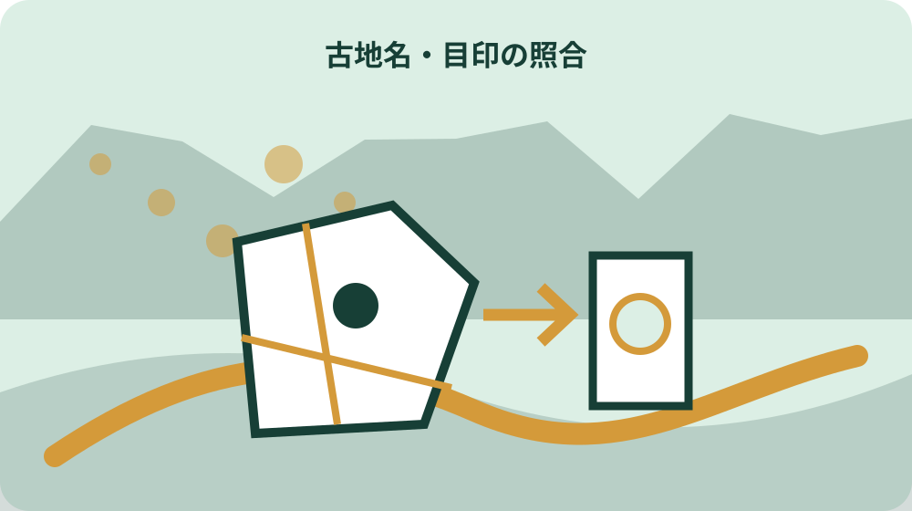
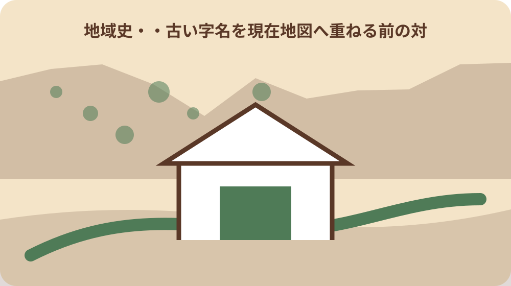

先に結論を確認する
この記事の答え：名前の一致だけでは確定できません。原資料の年代、周囲の地名、水路や道、現在の大字・字、地図の作成目的を並べ、一致の根拠と反証を残します。
森町で最初に照合する条件：古地名は資料に書かれた字体のまま転記し、読み、推定した現在地、家族内の通称を別欄にする。
古地名対照表の完成条件を先に決める
古文書や古絵図に見える地名を現在地図で探すとき、最初の成果物は一点を指す地図ではありません。原表記、資料年代、資料名、周囲の目印、現在地の候補、照合に使った資料、確度、未確認事項を一行で追える対照表です。別の人が同じ資料へ戻り、候補を再検討できることを完成条件にします。
表の先頭には案件番号と調べる目的を置きます。家の来歴を知りたいのか、古写真の撮影場所を探すのか、土地手続の参考にするのかで必要な精度は違います。歴史調査と現在の土地特定を同じ結論へまとめず、後者が必要なら別の確認経路へ渡します。
森町公式の図説森町史は、現在の町域が近世には三つの郡にまたがる48か村から成ったと説明しています。現在の町名だけを古い資料へ当てはめると、村の範囲や呼び方の変化を見落とします。対照表には時代の行政区分を記す欄を必ず設けます。
完成表を家族で共有するときも、候補地と確定地を色だけで区別しません。「資料上の一致」「地図上の有力候補」「所管未確認」のように状態を文字で示し、印刷して白黒になっても判断段階を読み取れるようにします。
調査開始時には対象語を一つに絞ります。一枚の古文書に複数の村名や耕地名が出る場合、主対象と周辺手掛かりを分けます。全てを同時に現在地へ結び付けようとせず、まず一語の根拠資料をそろえてから次の行へ進みます。
原表記・読み・現在地候補を三列に分ける
古い地名は最初に見た字形のまま写します。異体字や崩し字を現代字体へ直した場合は、原表記を消さず、翻刻欄と読み欄を分けます。読めない文字を似た地名で補うと、後の地図検索がその推測に引っ張られるため、判読できない箇所は空白ではなく未判読と記します。
家族が使ってきた呼び名も、公式の字名と同じ欄へ入れません。屋号、山の通称、耕地の呼び名、町内会で通じる場所は重要な手掛かりですが、登記上の所在を示すとは限りません。誰からいつ聞いた呼称かを記録し、口伝の証言として残します。
現在地候補には大字、字、地番、近くの道路や水路を分けて書きます。初期段階で地番まで分からなければ、大字候補と周辺目印だけで止めます。候補を細かく見せるために架空の番地を埋めず、次に必要な資料を未確認欄へ置きます。
同じ読みの字名が複数ある場合は行を分けます。一つを選んで他を消すのではなく、候補A、候補Bとして、それぞれ一致する目印と矛盾する条件を書きます。比較の過程が残れば、新しい史料が見つかったときに最初から調べ直さずに済みます。
検索語を作るときは、原表記、現代字体、推定読みを別々に試した記録を残します。検索結果が出なかった語も消さず、使用したデータベースと日付を記します。後に読みが判明したとき、どこまで調べたかを再現できます。
資料年代と作成目的を地名より先に読む
地名を読む前に、資料の表題、作成年、作成者、所蔵表示、作成目的を確認します。年貢、用水、屋敷割、道案内では、描かれる範囲も強調される情報も異なります。同じ線が水路、道、村境のどれを表すかは、資料の凡例と説明から判断します。
森町公式が紹介する円田用水八ヵ村絵図は、村落の区分だけでなく面積比率、用水配分、交通網を知る史料と説明されています。水を配る目的の絵図なら、現在の道路地図と同じ精度や向きを期待せず、水路と関係村の並びを主な照合軸にします。
下天方村絵図には元禄期の屋敷割や所持田地が記載されると町は説明しています。人名や所持地が見えても、そのまま現在の所有関係へつなげません。対照表では当時の記載内容と、現在確認した登記情報を別資料として管理します。
資料の掲載ページが新しく更新されても、絵図そのものの年代が変わるわけではありません。ウェブページ確認日、原資料の作成年、画像の撮影・掲載時点を別々に記録し、どの日付が何を示すかを取り違えないようにします。
引用するときは説明文と原資料上の文字を区別します。町の解説が地名の読みや年代を示している場合は解説の出典を付け、画像から自分で読み取った語には判読者と判読日を添えます。二つを合成した文章を原文として扱いません。
近世48か村と現在の大字を直結しない
近世の村名が現在の大字名と同じでも、範囲まで同じとは限りません。合併、分村、境界変更、河川や道路の変化があり得るため、名称一致は最初の候補にとどめます。旧村名、当時の郡、隣接村、現大字候補を別の列で並べます。
森町公式の歴史年表や図説ページで合併・編入の記事を見つけた場合は、出来事の日付と対象区域を対照表へ付記します。ただし一つの年表記事だけで小字境界まで復元せず、町史、地籍資料、登記所資料を役割ごとに追加します。
現在の住所表示から古文書を逆引きするときも、郵便住所、住民票の住所、土地の所在を混ぜません。家の呼称が同じ場所を指していても、古文書の土地単位と現在の一筆が一致するとは限らないためです。
対照表には「名称が継続」「名称は似るが範囲未確認」「別名の可能性」「一致根拠なし」の区分を用意します。断定できない状態を積極的に記録し、後から強い資料が出たときだけ確度を上げます。
村名の変化を示す年を見つけても、変更が即日すべての帳簿へ反映されたとは限りません。古文書の作成年と使用された呼称がずれる場合は、旧称の継続使用という可能性を置き、資料ごとの表記を優先します。
絵図の方角・色・目印を言葉に置き換える
古絵図は上が北とは限りません。寺社、山、川の流れ、道の分岐、隣村名など、現在も照合できる可能性がある目印を抜き出し、絵図のどちら側に描かれるかを文章にします。画像を回転した場合は回転前の向きも記録します。
森町村絵図は天保期の未完図で、街並みや蓮華寺山の様子が分かると紹介されています。未完という資料の状態を落とさず、描かれていない部分を当時存在しなかった場所と解釈しません。対照表では描画範囲外と不明を区別します。
明治4年の大鳥居村絵図は田を黄色、畑を赤色で示すと説明されています。色を現在の用途地域や地目へ置き換えず、原資料での凡例として転記します。退色や画像表示の違いがある場合は、色名だけでなく位置や囲み線も一緒に確認します。
目印には資料内番号を付けます。例えば川の合流点をM1、寺社をM2、道の分岐をM3とし、現在地図側の候補と対応させます。一つの目印だけで位置を決めず、複数の並びが同時に合うかを確認します。
絵図の画像へ直接書き込む場合は原画像を複製し、作業用にします。加えた矢印、回転、色補正、文字起こしを作業記録へ残し、原資料の線や色と自分の注記が見分けられる表示にします。

現在の大字・字は森町公式資料で照合する
現在の候補を作る際は、一般の地図検索だけでなく森町公式資料に現れる大字・字表記を確認します。町の都市計画税ページは課税区域を大字と区域（字）の組合せで示しており、現在使われる表記を照合する一資料になります。
課税区域の一覧は古地名辞典ではありません。掲載されていない字を消したり、課税対象外を存在しない地名と判断したりしません。資料の目的を欄外に書き、確認できた表記だけを現在候補へ転記します。
地籍調査ページには園田、飯田、一宮、森、天方、三倉の調査区域が大字名とともに示されています。一部区域や対象外があるため、地区名だけで成果があると決めず、対象地の大字と地番を示して確認します。
ウェブ検索で異なる表記が見つかった場合は、正誤を即断しません。掲載機関、ページ更新日、資料の対象年度を並べ、町の現在手続で使う表記と歴史資料の表記をそれぞれ保持します。
町の資料へ同じ字名が複数の文脈で現れたら、ページ名と担当課も記録します。税の区域表、地籍調査区域、防災資料では掲載目的が異なるため、同じ字名でも示す範囲や省略の仕方が同一とは仮定しません。
地籍図と旧土地台帳附属地図を区別する
森町の地籍調査ページは、公図の種類として地籍図、旧土地台帳附属地図、土地区画整理所在図、土地改良所在図などを挙げています。対照表には単に公図と書かず、閲覧した図面種類、地図番号、取得日を記録します。
地籍調査成果の申請書は対象所在地を大字、字、番で記す構成です。古地名しか分からない段階では申請対象を特定できない場合があるため、位置図や周辺地番を先にそろえ、何が不足しているかを用地係へ伝えます。
地籍図を見ても、古絵図の村境や屋敷割が自動的に一致するわけではありません。現在の筆配置を照合材料にしつつ、歴史資料の作成目的と縮尺を別欄に保ちます。線が似ることだけで時代を越えた同一境界と断定しません。
閲覧で得たメモには、対応した部署、日付、図面名、説明を受けた範囲を残します。町職員の説明を歴史的同定の保証へ広げず、行政資料で確認できた現在情報と自分の推論を文章上でも分けます。
国土地理院の図歴と空中写真で位置候補を比べる
国土地理院の地図・空中写真閲覧サービスでは、過去から現在までの地図や空中写真を探せます。測量年、縮尺、図郭名を記録し、古絵図と現在地図の間にある地形や土地利用の変化を確認する補助資料として使います。
空中写真で旧道や水路らしい形が見えても、地名や筆界が証明されたとは扱いません。撮影年、写真番号、見えた特徴、現在画像との違いを残し、古文書の語と直接結び付けた部分には推定と明記します。
国土地理院のサービスには閲覧や利用上の条件があります。最高画質表示や画像の扱いは現行の案内に従い、許される範囲を自己判断で広げません。家族用対照表には、画像そのものより検索条件と資料番号を残す方法も選びます。
年代の異なる地図を比べるときは同じ縮尺に見えても図式や測量方法が異なります。道、川、等高線、建物など比較する要素を一つずつ選び、地名の継続と地形の継続を別の評価にします。
一致・有力・未確認の三段階で確度を残す
対照表の確度は、確定と不明の二択にしません。「複数の一次資料で表記と位置が一致」「周辺目印から有力」「同名のみで未確認」の三段階を基本にし、各評価の根拠を短文で添えます。
有力候補を採用した場合も反証欄を残します。隣村名が合わない、川の向きが逆、作成年が想定と違うなど、不一致を記録すると、家族の記憶だけで確度が上がるのを防げます。
新しい資料を追加した日は、以前の評価を消さず履歴にします。誰が、どの資料を見て、どの理由で確度を変更したかを残します。昔の仮説が誤りだった場合も、同じ取り違えを繰り返さない材料になります。
未確認は調査失敗ではありません。必要な図面番号、読めない文字、照会先、次回の閲覧候補を具体化できれば、対照表は次の人へ渡せる状態です。空欄のまま終えるより、分からない範囲を言葉にします。

地番・所有権・境界の確定へ飛躍しない
歴史資料の場所候補が見つかっても、現在の地番、所有者、筆界が確定したわけではありません。法務省は登記所備付地図と地図に準ずる図面を区別し、公図の多くは現地復元に足る精度を持たないと説明しています。
土地手続へ使う場合は、歴史対照表を参考資料として示し、登記事項証明書、地図証明書、地積測量図、町の地籍成果など必要な現在資料を別に取得します。どの資料が何を証明するかを専門家や所管へ確認します。
近隣所有者へ古絵図を見せる際も、境界線の合意を迫る資料にしません。個人所蔵と表示された史料画像の利用条件、個人情報、公開範囲を確認し、調査目的を超えて配布しないようにします。
対照表の表紙には「歴史地名の候補整理であり、現在の権利・境界を証明しない」と記します。用途の限界を明示することで、相続や売買の担当者が必要な追加調査を判断しやすくなります。
大石の視点：古い呼び名を消さずに現在へ渡す
ここまでの絵図の説明、地籍調査区域、図面種類、国の地図サービスは一次資料で確認できる事項です。ここからは私、大石博之が家の資料を引き継ぐ際の考えで、森町や国の公式見解ではありません。私は古い呼び名を現在名へ置換した後も原表記を残します。
森町の山、川、田畑、寺社の呼び名は、家族の記憶と公的資料で役割が違います。行政上使われない通称でも、写真や古文書を探す手掛かりになります。一方、通称を公的な字名として届け出ることはできないため、欄を分けることが大切です。
私なら一つの正解を急ぐより、候補ごとに根拠を三つ集めます。文字の一致、周辺目印、年代の連続がそろうかを見て、そろわない部分を家族へ説明します。断定を避けることは記録を弱くするのではなく、将来の訂正を可能にします。
対照表の余白には、誰に聞けば続きが分かるかも残します。親族、地域の古老、資料館、町の担当、土地家屋調査士など、相談の目的を分けておけば、一人の記憶へ依存しない調査になります。
次の調査者が再確認できる対照表を仕上げる
完成表には原表記、翻刻、読み、資料名、作成年、所蔵表示、該当箇所、周辺目印、現大字・字候補、参照地図、確度、反証、確認日、次の照会先を並べます。画像と表は同じ資料番号で結び、切り離されても出典へ戻れるようにします。
地図ファイルには自分で付けた名称だけでなく、元の資料名、図郭名、写真番号、取得日を残します。スクリーンショットだけを共有せず、URLと検索条件を添えます。利用条件で画像共有が難しい場合は、閲覧手順を記録します。
家族へ渡す版と、専門家へ渡す版の情報量も分けます。個人名や所蔵者情報を必要以上に広げず、土地手続に必要な場合は本人の同意と用途を確認します。修正版には版番号を付け、古い結論が最新版として再利用されないようにします。
最後に未確認行だけを一覧にし、次回は何から始めるかを決めます。歴史資料の地名を現在へ結ぶ作業は一度で終わらないことがあります。原表記と調査経路を保ったまま更新できる状態を、対照表の完成とします。
調査を終える日は、使った資料を返却し、閲覧予約や複写条件に未処理がないか確認します。表だけを完成させて所蔵者や施設への約束を忘れず、次回利用者が同じ資料を適切に閲覧できる引継ぎまで残します。